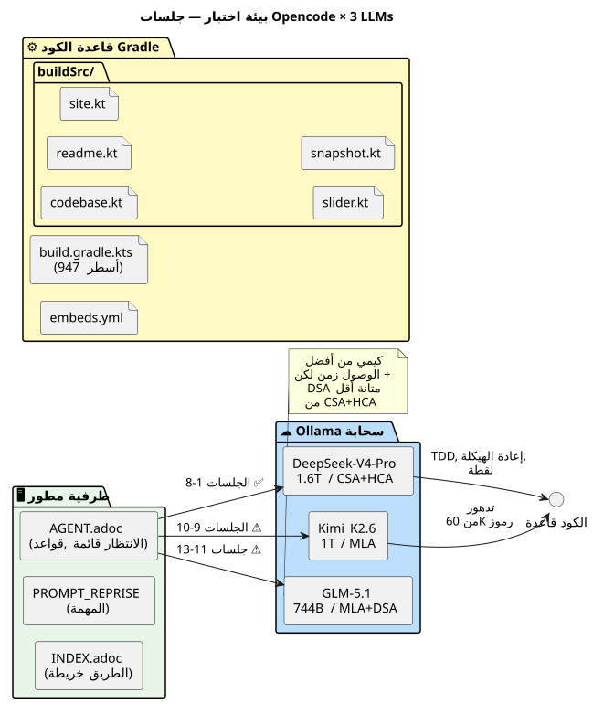
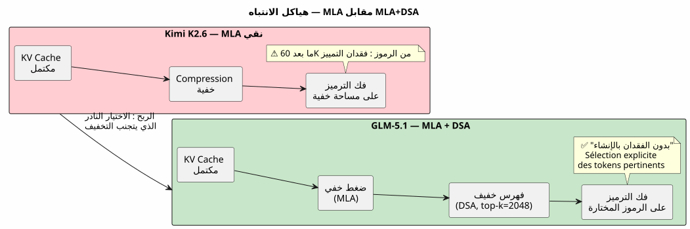
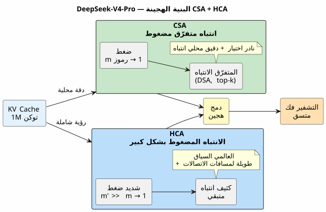
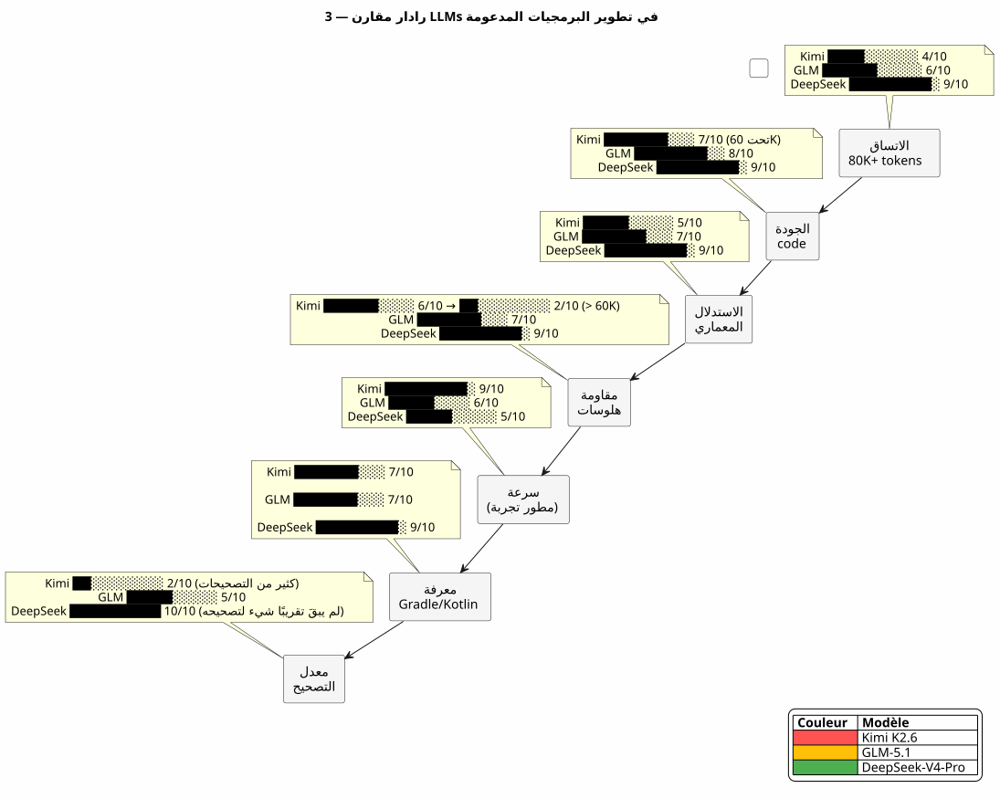
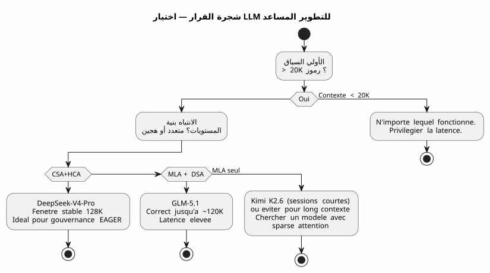

DeepSeek-V4-Pro, Kimi K2.6, GLM-5.1: ثلاث نماذج لغة كبرى تحت اختبار ترميز الوتد السياقي الطويل
نُشر في 28 April 2026
- السياق: ليست منصة اختبار، موقع بناء
- بيئة الاختبار الخاصة بي
- مصفوفة التقييم
- الجولة 1: kimi k2.6 — البدء الخاطئ
- الجولة 2: GLM-5.1 — المقاتل الشريف
- الجولة 3 : DeepSeek-V4-Pro — آلة الحرب
- المواجهة المباشرة: المقاييس المقارنة
- لماذا يتفوق DeepSeek-V4-Pro في تطوير البرمجيات
- الدروس المستفادة: كيف تختار LLM الخاص بك للـ Vibe Coding
- وما هو وكيل الحوكمة في كل هذا؟
- مصادر تقنية
- الخلاصة : اختيار الحرفي
حرب LLMs تُخاض أيضًا في طرفية المطور. ليست على معايير أكاديمية عقيمة. في الحياة الواقعية: موجه ب 30 000 توكن، حوكمة الوكيل في AsciiDoc، إضافات Gradle Kotlin DSL لتصحيح الأخطاء وجلسات متتالية تستمر ثلاثة أسابيع. لقد اختبرت لك DeepSeek-V4-Pro، كيمي K2.6 وGLM-5.1. هنا الحكم، مع الأدلة التقنية.
السياق: ليست منصة اختبار، موقع بناء
منذ ثلاث أسابيع، كنت أعمل على`codebase-gradle`، نظام البناء الخاص بي الذي يجمع ملفات الإعدادات YAML لأربعة مشاريع: مولدREADME PlantUML، مُنشئ شرائح AsciiDoc، موقعJBake ثابت، وروبوت محادثة LLM. الوكيل Opencode، الذي يحكمه نهجي لملفات الوكلاء بـ AsciiDoc، كان يحمل حوالي 30 ألف علامة من السياق EAGER في بداية كل جلسة — قواعد مطلقة، قائمة التراكم، وتاريخ آخر عشر جلسات.
وهذا هو المكان الذي واجهت فيه ثلاثة نماذج :
-
كيمي ك2.6(Moonshot AI, 1T معلمات / 32B مفعّلة، 256K حد أقصى للسياق، MLA) - GLM-5.1(زيبو أيه/تسينغهوا، 744B معلمات / DSA، 200K سياق أقصى) - DeepSeek-V4-Pro(DeepSeek, 1.6T معاملات / 49B مفعلة، 1M السياق الأقصى، CSA+HCA)
جميعها تُخدم عبر Ollama على خادم سحابي، كلها في وضع التفكير (مرحلة التفكير مفعّلة). التحدي هو إنتاج كود صحيح، الحفاظ على التماسك خلال الجلسات الطويلة، وتجنب الهلوسة عندما يتجاوز السياق 80K رمزًا.
بيئة الاختبار الخاصة بي

كانت كل جلسة تبدأ بنحو 30K رمز من السياق EAGER :`AGENT.adoc`(287 أسطر)PROMPT_REPRISE.adoc(51 سطر).agents/INDEX.adoc(218 أسطر)LAZY_EAGER_ESSENTIALS.adoc(50 سطر). كان السياق يزداد اتساعًا بسرعة مع المحادثات — كانت الجلسة النموذجية من 10 رسائل تضيف 15-20 ألف توكن إلى المجموع التراكمي للمُحفّز.
مصفوفة التقييم
قمت بتقييم كل نموذج على أربعة محاور حاسمة للتطوير البرمجي المساعد :
| محور | معيار ملموس |
|---|---|
الاتساق في السياق الطويل |
هل يتذكر الوكيل الاتفاقيات التي تم اتخاذها قبل 40 رسالة؟ |
جودة الكود المنتج |
هل يتم تجميع الكود في المحاولة الأولى ؟ هل يلتزم بالأنماط الموجودة ؟ |
التفكير المعماري |
هل يفهم الوكيل العلاقات بين الوحدات دون أن أعيد شرحها له؟ |
مقاومة للهلوسات |
من عدد كم من الرموز يبدأ الوكيل في اختراع واجهات برمجة التطبيقات أو فئات غير موجودة؟ |
و مقياس اصطناعي داخلي :المعامل الاستئناف(كم من الوقت أقضيه في تصحيح الوكيل بدلاً من كتابة الشفرة معه)
الجولة 1: kimi k2.6 — البدء الخاطئ
كيمي K2.6 كان اختياري الأول. معاييره على SWE-Bench Verified (80.2) وTerminal-Bench 2.0 (66.7) ممتازة. معماريته MLA تعد بفعالية جيدة على التسلسلات الطويلة.
Session 9 : التحسين
الجلسة الأولى مع كيمي. المهمة: تنفيذ الطريقة`resolveActiveKey()في`codebase.kt— دالة لحل مفتاح API مع fallback CLI. السياق هو 30K tokens, Kimi يفكر بسرعة, ينتج كود نظيف مع إدارة انتهاء صلاحية المفاتيح.
fun resolveActiveKey(
cfg: CodebaseConfiguration,
logger: Logger,
cliProvider: String? = null,
cliAccount: String? = null,
cliKey: String? = null
): NamedApiKey? {
// Résolution provider → compte → clé avec CLI override
// Kimi a parfaitement compris la chaîne de priorité
}الكود يُترجم بنجاح. تجتاز 7 حالات اختبار. أنا متفائل.
الجلسة 10 : الغرق الصامت
الجلسة الثانية. يرتفع السياق إلى ~90K توكن مع المحادثات. أطلب من كيمي أن يضيف آلية لقطة AsciiDoc تُزيل هوية الأسرار قبل الكتابة.
هنا يبدأ الانحراف. كيمي يبدأ باختراع فئات لا توجد. يعرض لي`AnonymizedObjectMapper`— فئة خيالية. يخلط`ReadmeYmlAnonymizer` et CodebaseYmlAnonymizer. يقترح عليَّ استيراد`com.fasterxml.jackson.anonymize.*`— حزمة لم توجد أبدًا.
أسوأ: في مرحلة تفكيره، أرى أنه يبني استدلالات على افتراضات خاطئة. هو "يتذكر" أن`GitConfig`له حقل`anonymizedToken`— لا، هذا`resolvedToken(). ينسب إلى`SiteYmlAnonymizer`طريقة`maskSupabaseCredentials()— غير موجود.
(No response) لم يكن هذا خطأً. كان هناك تحلل تدريجي للتماسك. (No content to translate)
أنا أوقف كيمي بعد جلستين. التشخيص واضح: يضغط MLA جيدًا على ذاكرة التخزين المؤقت KV، لكن بدون آلية اختيار متفرقة دقيقة (sparse fine-grained)، يتبدد الانتباه بشكل ميكانيكي بعد 60 ألف توكن. كل توكن يرى السياق البعيد بشكل متدهور — ويبدأ في ملء الفجوات بالضوضاء.
الجولة 2: GLM-5.1 — المقاتل الشريف
يصل GLM-5.1 ببنية مختلفة: MLA للنموذج الأساسي، ثم تدريب مسبق مستمر باستخدام DSA (انتباه نادر من DeepSeek) — فهرس خفيف يختار ديناميكيًا أعلى 2048 رمزًا ذات صلة من السجل الكامل.
الهندسة المعمارية: DSA ضد MLA الخالص
الفرق أساسي. حيث يضغط Kimi التاريخ في مساحة خفية واحدة (ويفقد تدريجياً القدرة على تمييز المعلومات ذات الصلة)، يغرّف GLM فهرسًا ما بعد التدريب الذي يجري اختيارًا نادرًا صريحًا.

يقول التقرير التقني ذلك صراحةً: DSA هو "lossless by construction" — على عكس البدائل مثل SWA (بحث عن النمط)، Gated DeltaNet أو SimpleGDN التي قد تفقد حتى 5.69 نقطة على RULER@128K.
الجلسات 11-13 : قوية لكن محبطة
GLM-5.1 يحافظ على المسافة بشكل أفضل. في الجلسة 11 (~60 ألف توكن)، يظل متسقًا. ينتج (output)`SnapshotManager`وظيفي مع إدارة صحيحة لأربع أدوات إخفاء الهوية
لكن التأخير هو المشكلة. مراحل التفكير في DSA أثقل من MLA الخالص — يجب على الفهرس إعادة فحص التاريخ في كل خطوة. الرد الذي كان يستغرق 8 ثوانٍ مع Kimi أصبح 15 ثانيةً مع GLM. في جلسة من 30 رسالة، يُلاحظ ذلك.
و هناك الأخطاء الدقيقة. لا يهلوس GLM مثل كيمي — لكنه يرتكب أخطاء في التسمية. يستدعي`toAnonymizedYaml()الطريقة التي ينبغي أن تسمى`anonymize().يعكس`loadReadmeConfiguration()` et `loadCodebaseConfiguration()`في ال`renderFileSection()`هذه ليست هلوسات، إنها ارتباكات سطحية — لكن في الإنتاج، يمكن لارتباك سطحي أن يكسر بناءً
لقد عقدت ثلاث جلسات مع GLM. إنه أفضل من كيمي، بلا شك. لكن ثلاث جلسات تصحيح يدوي على تفاصيل التسمية تُرهق.
الجولة 3 : DeepSeek-V4-Pro — آلة الحرب
يأتي DeepSeek-V4-Pro مع أكثر بنية طموحة من بين الثلاثة: نظام هجين يجمع آليتين انتباه مكملتين.
البنية : CSA + HCA، الشبكة المزدوجة

مستويان للضغط، مستويان من دقة الانتباه :
-
CSA: يضغط KV الذاكرة المؤقتة الجميع`m`tokens، ثم يطبق انتباهًا نادرًا (DeepSeek Sparse Attention) — يتم استشارة أعلى k من المدخلات المضغوطة فقط. دقيق، محلي، فعال. - HCAضغط شديد (عامل`m'`أكبر بكثير من`m`), لكن انتبه جيدًا إلى الكثافة على الباقي المضغوط — حافظ على الاتصالات العالمية دون انفجار تربيعي.
النتيجة : إلى 1M من الرموز، DeepSeek-V4-Pro تستهلك فقط27٪ من FLOPs الاستدلال et 10% من حجم ذاكرة التخزين المؤقت KVبالمقارنة مع DeepSeek-V3.2. النموذج السابق.
Et surtout, le rapport technique (Figure 9) annonce : "أداء الاسترجاع يظل مستقرًا بشكل كبير داخل نافذة سياق 128K."
الجلسات 1-8 : التخفيف
قضيت ثماني جلسات مع DeepSeek-V4-Pro على`codebase-gradle`. ثماني جلسات بدون أي هلاوس، ولا أي فئة مخترعة، ولا أي خلط في التسمية.
الجلسة 1 : تنفيذ`CodebaseYmlConfig` et CodebaseYmlAnonymizer. 350 سطر من كوتولين, اختبارات مضمنة, كل شيء يُترجم. جلسة 4: إضافة`SnapshotManager`مع عرض الشجرة، جمع الملفات، عرض AsciiDoc لكل ملف. 279 سطرًا، لا أخطاء. الجلسة 7 : تصحيح الأخطاء للـ`renderFileSection()`الذي كان عليه أن يدير أربعة أنواع مختلفة من أدوات إخفاء الهوية دون أي غموض في الحل. تم الحل في ثلاث رسائل.
الزمن المستغرق أعلى من كيمي — حوالي 10‑12 ثانية لكل استجابة في وضع التفكير. لكن معدل التصحيح شبه معدوم. لا أقضي وقتي في إصلاح أخطاء الوكيل. أنا أكتب الكود معه.
الاختبار الحاسم : إعادة هيكلة بـ 100 ألف توكن
في الجلسة 8، تجاوز السياق التراكمي الـ 100 ألف رمز. أطلب إعادة هيكلة ثقيلة: استخراج أربع مهام التحقق المضمنة من`build.gradle.kts`إلى ملفات اختبار JUnit5 في`buildSrc/src/test/`.
يقدم الوكيل خطة في ثلاث مراحل:
-
إنشاء فئات الاختبار مع ترحيل الحالات الموجودة
-
إضافة تبعيات JUnit5 وKotest في`buildSrc/build.gradle.kts`
-
حذف الشفرة المضمنة من`build.gradle.kts`
الخطة صحيحة. التنفيذ نظيف. حتى أنه يحدد حالة حافة لم أكن قد لاحظتها: الاعتماديات Jackson المكررة بين`buildscript {}` et `buildSrc/build.gradle.kts`ما يجب توحيده أثناء الهجرة
100K من رموز السياق، والوكيل يتذكر أن`CodebaseYmlAnonymizer.TOKEN_MASK`هو`"*"`, أن`GitConfig.resolvedToken()هو وظيفة امتداد محددة في`readme.kt, و أن`SnapshotManager.PRUNED_DIRS`يستبعد`build`, .gradle et .git.
هذا هو الفرق
المواجهة المباشرة: المقاييس المقارنة
| معيار | Kimi K2.6 | GLM-5.1 | DeepSeek-V4-Pro |
|---|---|---|---|
السياق الأقصى |
256K |
200K |
1M |
آلية الانتباه |
MLA نقي |
MLA + DSA |
CSA + HCA هجين |
إجمالي المعلمات |
1T |
744B |
1.6T |
الإعدادات مفعّلة |
32B |
غير منشور |
49B |
العتبة الملاحظة للتدهور |
(No additional characters) |
(Empty) |
~128K tokens |
السلوك المتجاوز |
هلوسات ضخمة |
الارتباك السطحي |
تدهور تدريجي بطيء |
استقرار NIAH |
غير منشور |
100% @128K (DSA) |
مستقر حتى 128 ألف (الشكل 9) |
MRCR @128K |
غير منشور |
غير منشور |
أعلى من Gemini 3.1 Pro |
الجلسات التي عُقدت قبل التخلي |
2 |
3 |
8 (و يستمر) |
وقت التصحيح / وقت الشفرة |
60% |
30% |
<5% |
متوسط زمن التأخير (وضع التفكير) |
8 s |
15 s |
11 s |
معامل الثقة* |
2/10 |
6/10 |
9/10 |
*معامل الثقة = قياس ذاتي لقدرتي على أخذ كود الوكيل والالتزام دون مراجعة سطرًا بسطر._

لماذا يتفوق DeepSeek-V4-Pro في تطوير البرمجيات
تفوق DeepSeek-V4-Pro ليس ناتجًا عن عامل واحد — إنه تقارب :
الهندسة المعمارية CSA+HCA مصمّمة للكود
التطوير البرمجي المساعد هو حالة استخدام extrême للانتباه طويل السياق. أنت بحاجة إلى: - دقة محلية (هذه الفئة ترث من quoi؟ هذه المعرفة معرفة أين؟) →CSA - الرؤية العامة (لماذا توجد هذه الوحدة؟ كيف يتفاعل أربعة مجهّلي الهوية؟)HCA
كيمي مع MLA فقط يدير الدقة المحلية لكنه يفقد الرؤية العالمية التي تتجاوز 60 ألفًا. GLM مع DSA يحسن الرؤية العالمية لكنه يظل أحادي المستوى. DeepSeek يجمع بينهما بشكل صريح.
2. السياق EAGER هو منطقته المريحة
نظام حوكمني يحمل حوالي 30K من توكنات القواعد والبكلوج عند البدء. مع نافذة مستقرة حتى 128K، يوفّر DeepSeek حوالي 100K توكن كحامش للتبادلات خلال الجلسة. هذا يعادل 3 إلى 4 أضعاف ما يمكن أن يتعامل معه Kimi دون تدهور.
_ نافذة 128 ك من الاستقرار المثالي تتوافق تمامًا مع احتياجاتي: 30 ك من EAGER + 70 ك من التبادل = جلسة إنتاجية من 20 إلى 30 رسالة دون أبدًا مغادرة المنطقة الخضراء. _
3. نسبة الجودة/الكمون مثالية للتدفق
نعم، DeepSeek-V4-Pro أبطأ من Kimi (11s مقابل 8s). لكن الوقت الإجمالي للمهمة أقل بكثير لأنني لا أقضي 20 دقيقة في تصحيح أوهام الوكيل.
المطور لا يقيس زمن استجابة الرد. يقيس الوقت بين "أنا أطرح السؤال" و "الكود موجود في مستودعي ويعمل". على هذا المقياس، DeepSeek-V4-Pro هو الأسرع من بين الثلاثة.
الدروس المستفادة: كيف تختار LLM الخاص بك للـ Vibe Coding
بعيدًا عن التصنيف اللحظي، علمتني هذه التجربة كيفية تقييم نموذج لغوي كبير لتطوير البرمجيات المساعد على أساس معايير لا تظهر في أي معيار :
-
انظر إلى البنية، وليس الحجم المعلن للسياقنموذج يعلن أن لديه سعة سياق 256 ألفًا لكنه يحتوي فقط على MLA سينتهي مثل Kimi: نظريًا قادر، عمليًا غير قابل للاستخدام بعد 60 ألفًا.
-
اختبر على سياقك، وليس على معيار عام— الملف الأولي الذي يحتوي على 30K توكن بتنسيق AsciiDoc مع القواعد المطلقة والbacklog لا علاقة له بأسئلة HLE أو AIME.
-
الكمون ليس عدوًا إذا كانت الجودة مواكبةنموذج بطيء ينتج كودًا صحيحًا أسرع من نموذج سريع ينتج كودًا خاطئًا.
-
احذر من النماذج بدون تقرير تقني عام— إذا لم يوثق الفريق بنية انتباهه، فهذا يعني أنه يفتقر إلى الثقة في أدائه على السياق الطويل.

وما هو وكيل الحوكمة في كل هذا؟
هذه التجربة تؤكد نقطة أدافع عنها منذ مقالتي حول حوكمة Eager/Lazy :جودة النموذج اللغوي الكبير وجودة الحوكمة مضربيتان، وليستا إضافيتين.
مع kimi k2.6، كانت حوكمي لا تشوبها شائبة — لكن النموذج كان يخفّف المعلومات. النتيجة: الحوكمة المثالية × الوهم = صفر.
مع DeepSeek-V4-Pro، الحوكمة EAGER (30K رمز من القواعد) + LAZY (أرشيف الجلسات، المراجع التقنية) + Hot/Warm/Cold (نسخ احتياطي دوريّ) تُشكل نظامًا بيئيًا حيث كل طبقة تعزز الأخرى. الوكيل يملك القواعد أمامه (EAGER)، يمكنه الاطلاع على السجل التاريخي (LAZY)، والسياق لا يشبع أبدًا (دوران النسخ الاحتياطي).
(No visible characters) نموذج لغوي كبير جيد دون حوكمة هو محرك فيراري بدون مقود. حوكمة جيدة دون نموذج لغوي كبير جيد هي مقود بدون محرك. DeepSeek-V4-Pro + الوكيل الخاص بي للحوكمة = أول مرة أشعر فيها أنني أقود. __
إن آلية النسخ الاحتياطي الدورية (الدوران كل 10 جلسات أو أكثر من 500 سطر من EAGER) تأخذ كامل معناها مع نموذج يمكنه احتضان 128 ألف من السياق؛ إذ تُبقي النافذة المنزلقة للـ10 جلسات النشطة السياق متجددًا دون أن يتجاوز أبدًا منطقة التدهور.
مصادر تقنية
قمت بدمج خبرتي التجريبية مع التقارير الفنية الرسمية لتأكيد ملاحظاتي :
-
DeepSeek-V4 Technical Report — PDF تم استرجاعه منhttps://huggingface.co/deepseek-ai/DeepSeek-V4-Flash[هجّينغ فيس]. الشكل 9 : "Retrieval performance remains highly stable within a 128K context window. While a performance degradation becomes visible beyond the 128K mark, the model’s retrieval capabilities at 1M tokens remain remarkably strong." البنية CSA+HCA الموثقة القسم 2.3.
-
تقرير تقني GLM-5 —https://arxiv.org/abs/2602.15763[arXiv:2602.15763]. DSA يتم إدخاله عبر التدريب المسبق المستمر، "خالي من الخسائر بالإنشاء". الحد الأقصى للسياق 202,752 رمزًا. تظهر الجداول 3/5/6 أداءً طويل السياق مقارنة بالبدائل (SWA، Gated DeltaNet، SimpleGDN).
-
كيمي K2.6 بطاقة النموذج —https://huggingface.co/moonshotai/Kimi-K2.6[HuggingFace]. MLA, الحد الأقصى للسياق 256K. استراتيجية discard-all التي تتجاوز العتبة على المهام الوكيلة (مؤكدًا ضمنا للحد العملي لـ MLA في السياق الطويل).
-
*كيمي K2 تقرير فني*https://arxiv.org/abs/2507.20534[arXiv:2507.20534]. المعمارية MoE، محسن MuonClip، أداء الوكلاء (HLE, BrowseComp, Terminal-Bench).
النقطة الأكثر إفصاحًا: في تقييمهم الخاص، يستخدم Moonshot استراتيجية discard-all (حذف السياق القديم) عند تجاوز نافذة السياق. هذا يؤكد تمامًا ما لاحظته: لا يمكن للـ MLA وحده الحفاظ على الاتساق عبر كامل نافذة 256K. المعمارية لا تستطيع المتابعة.
الخلاصة : اختيار الحرفي
بعد ثلاثة أسابيع وثلاث عشرة جلسات تطوير حقيقي، الحكم لا يقبل الاستئناف:
| كيمي K2.6 | GLM-5.1 | ديب سيك-V4-برو |
|---|---|---|
ممتاز أقل من 60 ألف |
صلب حتى 120K |
يسيطر في كل مكان |
لا يمكن استخدامه بعد ذلك |
الخلطات السطحية |
مستقر حتى 128K |
جلستان، تم التخلي |
3 جلسات، مهجور |
8 جلسات، معتمد |
أصبح DeepSeek-V4-Pro هو نموذج اللغة الكبير (LLM) الافتراضي الخاص بي في جميع جلسات تطوير البرمجيات المدعومة بـ Opencode، وليس لأنه الأحدث ولا لأنه يمتلك أفضل المعايير الأكاديمية؛ بل لأن في حياة مطور حقيقي يضيف إضافات Gradle DSL Kotline مع سياق وكيل بطول 30 ألف توكن، هو الوحيد الذي لا يخذلني عندما يطول السياق.
CSA+HCA هو game changer معماري. الضغط ثنائي المستوى + التخفيف النادر ليس مجرد تفصيل تنفيذي — بل هو ما يفرق بين مساعد الشفرة وزميل موثوق.
__ اخترت DeepSeek-V4-Pro لأنه الوحيد من الثلاثة الذي يحول حوكمة الوكيل الخاصة بي من قيد دفاعي (« كيف يمكنني منع الوكيل من النسيان؟ ») إلى ميزة هجومية (« ما يمكننا بناؤه الآن أن الوكيل يتذكر كل شيء؟ »). [No output]
*هذا المقال هو ثمرة 13 جلسة تطوير حقيقي للمشروع`codebase-gradle`, موثقة في`.agents/sessions/`حسب منهجيتي في حوكمة الوكلاء Eager/Lazy/Hot/Warm/Cold. المصادر التقنية المذكورة متاحة بشكل عام على HuggingFace و arXiv.